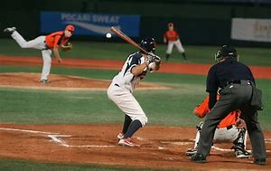
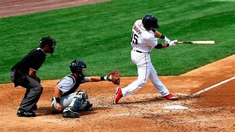
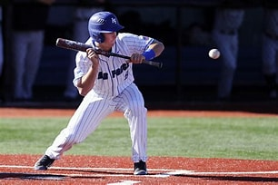

inicio
NOTICIAS
Cachorros se imponen en san Diego con grand slam de morel

*
/>
san Diego El dominicano christopher morel logro el primer grand slam en su carrera el brasileño
yan gomes aporto otro janron por los Cachorros y Chicago vencio el martes 5-1 a joe musgrove y a los
padres de san diego.
Orioles convocan a jackson Hollday, prospecto Nro.1 de G.L.
La era de Jackson Holliday en Baltimore está por comenzar.
Los Orioles han convocado al jardinero de 20 años, considerado el
prospecto Nro. 1 de MLB Pipeline, desde Triple-A. Para abrirle
espacio en el roster, el infielder/jardinero Tony Kemp fue
designado para asignación.
Holliday, hijo del exligamayorista Matt Holliday,
estará con el equipo el miércoles para el segundo
juego de su serie en Boston.
Holliday, la primera selección general del Draft amateur de MLB
en 2022, tenía línea ofensiva de .333/.482/.595 con dos jonrones en
10 juegos en Triple-A en el 2024, y tiene un promedio de por vida de .
321 con un OPS de .949 en ligas menores.
Holliday ha demostrado que puede desempeñarse en la segunda base,
además de su posición natural de campocorto, donde vio acción en el
Spring Breakout durante la pretemporada. Es probable que esté en la
intermedia para su debut en las Grandes Ligas.
Mike Trout exhibe su forma de JMV con un histórico inicio de campaña
ANAHEIM Los jonrones siguen llegando para Mike Trout.
Trout impuso un récord para el equipo, convirtiéndose en el jugador
que más rápido empalma seis vuelacercas para iniciar una temporada,
consiguiendo esa cifra en apenas 11 encuentros. Conectó un cañonazo
de dos carreras en el primer episodio del juego del martes para
llegar a tres partidos consecutivos con cuadrangular, en la
eventual derrota de Los Ángeles-Anaheim 6-4 ante los Rays
en el Angel Stadium.
“Cuando (los lanzadores) cometen errores, los hace pagar”, expresó
el manager de los Angelinos, Ron Washington. “Incluso en su segundo
turno, falló por poco. Está haciendo muy buenos swings”.

Aunque el resto de la ofensiva del club ha estado apagada, Trout
va por el camino contrario, bateando .293/.370/.780 con seis
vuelacercas, un triple y ocho empujadas. Esos seis batazos de
vuelta completa lo empatan con Tyler O Neill de Boston por el
liderato de Grandes Ligas.
Es una gran noticia para los Angelinos, considerando que Trout se
vio limitado a disputar apenas 82 juegos el año pasado debido a una
fractura en la mano izquierda y terminó bateando .263/.367/.490 con
18 bambinazos y 44 impulsadas por debajo de su media de por vida
de .301/.412/.583.
Pero cualquier interrogante sobre la calidad de Trout, luego de las
lesiones que ha sufrido en los últimos años, ha sido despejada.
El cañonero, quien ha sido Jugador Más Valioso de la Liga
Americana en tres ocasiones y ha sido convocado al Juego de
Estrellas 11 veces, está luciendo su forma habitual, exhibiendo
una de las mejores tasas de contacto de su carrera. También ha
sido más agresivo en las bases, robándose dos almohadillas hasta
ahora, la misma cantidad que tuvo en el 2023.
Rhett Bollinger cubre a los Angelinos para MLB.com.
Anteriormente, cubrió a los Twins del 2011 al 2018.
